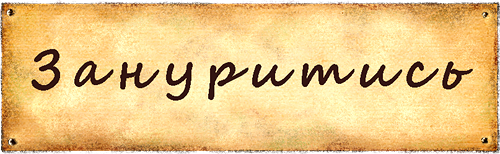

!DOCTYPE html>
<html lang="en">
<head>
  <meta charset="UTF-8">
  <meta http-equiv="X-UA-Compatible" content="IE=edge">
  <meta http-equiv="Cache-Control" content="no-store">
  <meta name="viewport" content="width=device-width, initial-scale=1.0">
    <style>
      body {
      background-image: url('004.jpg');
      background-repeat: repeat;
      background-position: center;
      margin: 0;
      padding: 0;
      font-family: Segoe Script, sans-serif;
      }
      .fixed-image {
        position: fixed;
        top: 0;
        z-index: 1;
      }   
      h1, p {
        text-align: center;        
      }     
      .container {
        /*border: 2px solid #5c7058;*/
        height: 89vh;
        margin: 0 auto;
        overflow: hidden;
        text-align: center;
        display: flex;
        flex-direction: column;
        overflow-y: auto; /* Додає вертикальну полосу прокрутки, якщо вміст не вміщується */
      }
      .horiz {
        /*border: 2px solid #5a51cf;*/
        display: flex;
        flex-direction: row;
        justify-content: center;
        flex-wrap: wrap; /* Заворотка на новий рядок при необхідності */ 
      }
      .opis {
        /*border: 2px solid #f8a528;*/
        text-align: center;
        box-sizing: border-box;
        width: 45%; /* Ширина .opis для відображення по 2 в ряду */
        min-width: 45vh;
        margin: 2px;  
      }
      .opis2 {
        /*border: 2px solid #f8a528;*/
        text-align: center;
        box-sizing: border-box;
        width: 95%; /* Ширина .opis для відображення по 2 в ряду */
        min-width: 45vh;
        margin: 2px;  
      }
      .arh{
        width: 100%;
        max-width: 430px;
      }
      .content {
        box-sizing: border-box;
        width: 99%;
        min-height: 150px;
        padding: 15px;
        background-color: rgb(250, 237, 200);
        border-radius: 10px;
        flex-direction: row;
        margin: 2px;
      }
      .indented-text {
        margin: 10px; /* Задайте потрібний вам відступ */
      }
      .horiz2{
        display: flex; flex-direction: row; justify-content: center;
        height: 30vh;  
      }

      .imgT2,.imgT3 {
        position: relative;       
        max-height: 15%;   
        }  
      .imgT {
        /*border: 2px solid #5f1277;*/
        display: flex; flex-direction: row;
        height: 10vh;       
        align-items: center;
        justify-content: flex-start;
        margin-top: 0;
        margin-left: 3%; margin-right: 3%;
	      cursor: pointer;
        }
      .mal {
        /*border: 2px solid #f828cb;*/
        height: 5vh; 
        margin-top: 0;
        }            
      .modal {
        display: none; /* Початково ховаємо модальні вікна */
        position: fixed;
        top: 0;
        left: 0;
        width: 100%;
        height: 100%;
        background-color: rgba(126, 83, 83, 0.555);
        z-index: 1;
        max-height: 100vh; /* Задає максимальну висоту для модального вікна */
        overflow-y: auto; /* Додає вертикальну полосу прокрутки, якщо вміст не вміщується */
      }
      .modal-content {
        background-color: #fff;
        margin: 15% auto;
        padding: 20px;
        border: 1px solid #888;
        width: 70%;
        position: relative;
        text-align: center;     
      }
      .close {
        color: red;
        cursor: pointer;
        text-decoration: underline;
        position: absolute;
        top: 10px;
        right: 10px;
      }
    </style>
  </head>
  <body>
    <div class="fixed-image">
      <a href="arh_stol.html">
        
      </a>
    </div>
    <h1>Пошукач</h1>
    <div class="container">
      <div class="horiz">
        <div class="opis">
          
        </div>
        <div class="opis">
          <div class="content" id="prag"></div>
        </div>       
      </div>
      <div class="horiz">
        <div class="opis">
          <div class="content" id="supr"></div>
        </div>
        <div class="opis">
          <div class="content" id="vkl"></div>
        </div>
      </div>
      <div class="horiz">  
        <div class="opis">
          <div class="content" id="lub"></div>
        </div>
        <div class="opis">
          <div class="content" id="nel"></div>
        </div>
      </div>
      <div class="horiz">
        <div class="opis2">
          <div class="content" id="scrn"></div>
        </div>
        <div class="horiz2">
          <div class="imgT" id="imgT2">
                        
          </div>
          <div class="imgT" id="imgT3">
                      
          </div>
        </div>
      </div>
      
    </div>
    <div class="modal" id="modal">
      <div class="modal-content">
        <span class="close" id="close">&times;</span>
        <p id="modalContent"></p>
      </div>
    <script>
       var Prag = ['<span style="font-size: 20px; color: black;">Він прагне:</span>',
      '<span style="font-size: 16px; color: maroon;">Жити краще, більш якісним, повним життям, а також свободи пошуку себе та прояву індивідуальності</span>',
      '<br>',      
      '<span style="font-size: 20px; color: black;">Стратегія: Пошук та Враження</span>',
      '<span style="font-size: 16px; color: maroon;">Його шлях до успіху у виході з системи, щоб залежати лише від себе, пропагувати свободу та переміщення, бути у вічному русі в думках і фізично, вчитися, знаходити, розглядати, пробувати на зуб, йому важливо «зробити самому»</span>'
      ]

      var Supr = ['<span style="font-size: 20px; color: black;">Суперсили:</span>',
      '<span style="font-size: 16px; color: black;">(характерні ознаки)</span>',
      '<span style="font-size: 16px; color: maroon;">Пошук, свобода, дорога, відкриття, ризик, поліфункціональність, пригода, автономність, міцність, закордонне</span>',
      '<span style="font-size: 20px; color: black;">Активує:</span>',
        '<span style="font-size: 16px; color: maroon;">нові враження, ідеї для пошуку, цікавість, загадка, челендж для себе</span>'
      ]

      var Vkl = ['<span style="font-size: 20px; color: black;">Скарб для нього:</span>',
      '<span style="font-size: 16px; color: maroon;">Автономія, самопізнання, пошук</span>',
      '<br>',
        '<span style="font-size: 20px; color: black;">Потаємні страхи:</span>',
        '<span style="font-size: 16px; color: maroon;">пустота всередині, пристосування,  відчуття пастки, стагнація та не відчувати життя</span>'
      ]        

      var Lub = ['<span style="font-size: 20px; color: black;">Його люблять за:</span>',
        '<span style="font-size: 16px; color: maroon;">Його цікавість, допитливість, здатність до відкриття нових горизонтів й світів</span>',        
      ]            

      var Nel = [ '<span style="font-size: 20px; color: black;">Не люблять за:</span>',
        '<span style="font-size: 16px; color: maroon;">Непостійність, тенденцію шукати нові враження навіть коли це непрактично, схильність до самостійності</span>']   

      var Scrn = ['<span style="font-size: 20px; color: black;">Найважче дається:</span>',
        '<span style="font-size: 16px; color: maroon;">Зосереджуватись й завершувати розпочаті справи</span>',
        '<span style="font-size: 20px; color: black;">Скриня тіней</span>',
        '<span style="font-size: 16px; color: maroon;">Складнощі у побуті може створити властиві йому лінь, прокрастинаторство, тяга до подорожей та змін, постійний пошук нових вражень і нестерпність до нудьги й рутини, незалежність думок але й нестабільність у вирішеннях проблем чи неспроможність зупинитись, ризикованість і любов до пригод. Оточуючі часто сприймають його ненадійним ледарем, який уникає реальності, хоча очікують цікавинок і нових досліджень.</span>' 
      ]
      document.getElementById('prag').innerHTML = '<div class="indented-text">' + Prag.join('<br>');
      document.getElementById('supr').innerHTML = '<div class="indented-text">' + Supr.join('<br>');
      document.getElementById('vkl').innerHTML = '<div class="indented-text">' + Vkl.join('<br>');
      document.getElementById('lub').innerHTML = '<div class="indented-text">' + Lub.join('<br>');
      document.getElementById('nel').innerHTML = '<div class="indented-text">' + Nel.join('<br>');
      document.getElementById('scrn').innerHTML = '<div class="indented-text">' + Scrn.join('<br>');

    var UKR = ['<span style="font-size: 20px; color: black;">Пошукач</span>',
      '<span style="font-size: 18px; color: maroon;">Йому притаманний пошук індивідуальності, свобода як всередині, так і в самопрояві у зовнішньому світі. Ця свобода дає можливість не підкорятися правилам й, при необхідності, просто змінювати простір на більш придатний. </span>',
      '<span style="font-size: 18px; color: maroon;">Акцент на незалежність, нові враження, багато руху спрямованого вперед. За такого ритму дуже цінується зручність та багатофункціональність речей: легкість трансформації для широкого спектру функцій, багатошаровість, швидкість, з якою нею можна скористатися й збільшена міцність – робочий стан в будь-яких зовнішніх умовах і автономність.</span>',
      '<span style="font-size: 18px; color: maroon;">Цей архетип сам налаштований та посилює тему пригод, змін, цікавості, інтересів, жаги до нових яскравих вражень. Він допомагає відчути повноту життя й цінує унікальність та шлях  дослідників першовідкривачів: так як ще не робили він або його оточення, той варіант, котрий ще не спробували. Йому близький дух експерименту й виклику самому собі, пошук, котрий не зупинити, неначе вічний двигун.</span>',
      '<span style="font-size: 18px; color: maroon;">Погляд в далечінь – подорож й новий досвід, близкість природі у вигляді розвідки та відкриття оточуючим альтернатив.</span>'
      ]
        var ROS = ['<span style="font-size: 20px; color: black;">Искатель</span>',
      '<span style="font-size: 18px; color: maroon;">Для него характерен поиск индивидуальности, свобода как внутри, так и в самовыражении во внешнем мире. Эта свобода дает возможность не подчиняться правилам, и при необходимости просто менять пространство на более подходящее.</span>', 
      '<span style="font-size: 18px; color: maroon;">Акцент на независимость, новые впечатления, много движения устремленного вперед. В таком ритме очень ценится удобство и многофункциональность вещей: легкость в трансформации для выполнения широкого спектра функций, многослойность, быстрота, с которой им можно воспользоваться и повышенная прочность - рабочее состояние в любых внешних условиях, автономность.</span>',
      '<span style="font-size: 18px; color: maroon;">Этот архетип настроен/усиливает тему приключений, перемен, любопытства, интереса и жажду новых и ярких впечатлений. Он помогает почувствовать полноту жизни и ценит уникальность, путь первооткрывателей: так как еще не делали он либо его окружение, тот вариант, которым еще не пользовались.</span>',
      '<span style="font-size: 18px; color: maroon;">Ему близок дух эксперимента и вызова самому себе, поиск, который не останавливаться, как «вечный двигатель». Взгляд вдаль - путешествие и новый опыт, близость к природе в виде разведывания и открывания другим альтернатив.</span>'
      ]
      var imgT2 = document.getElementById('imgT2');
      var imgT3 = document.getElementById('imgT3');
      
      var modal = document.getElementById('modal');
      var modalContent = document.getElementById('modalContent');
      var close = document.getElementById('close');
    
      imgT2.addEventListener('click', function() {
      modal.style.display = 'block';
      modalContent.innerHTML = UKR.join('<br>');
      });
      imgT3.addEventListener('click', function() {
      modal.style.display = 'block';
      modalContent.innerHTML = ROS.join('<br>');
      });
      close.addEventListener('click', function() {
      modal.style.display = 'none';
      });

      window.addEventListener('click', function(event) {
      if (event.target == modal) {
        modal.style.display = 'none';
      }
    });
    </script>
  </body>
</html>
